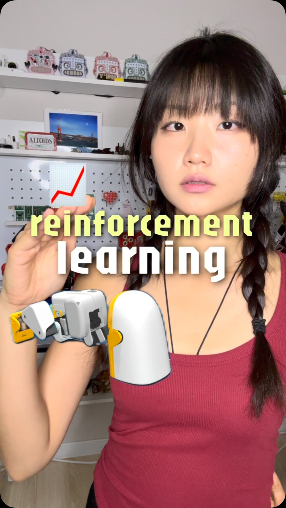
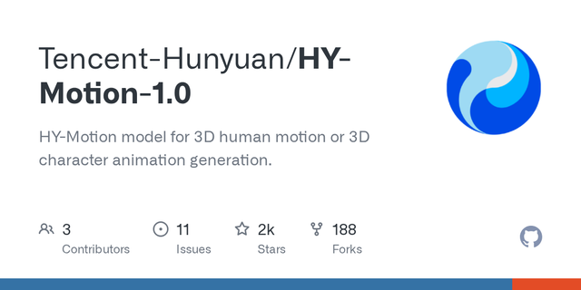
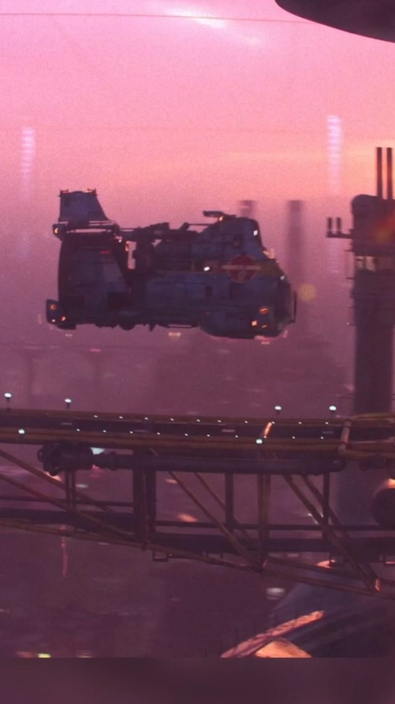
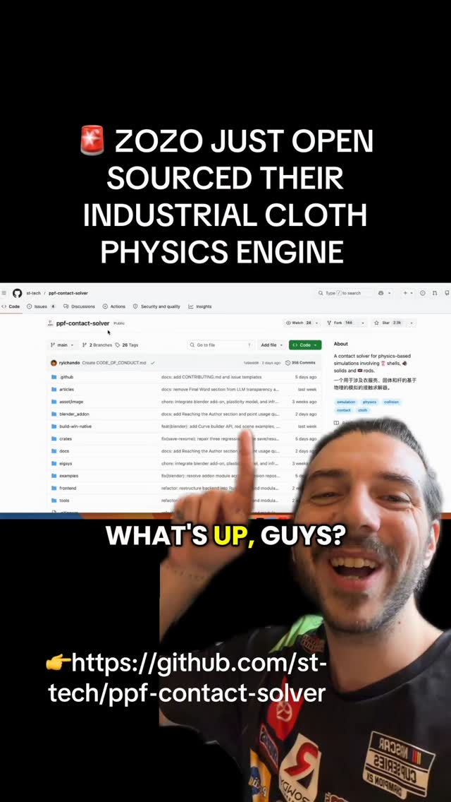
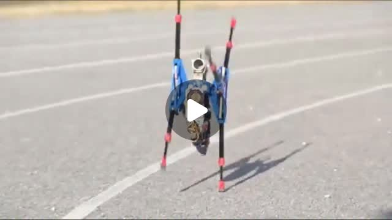
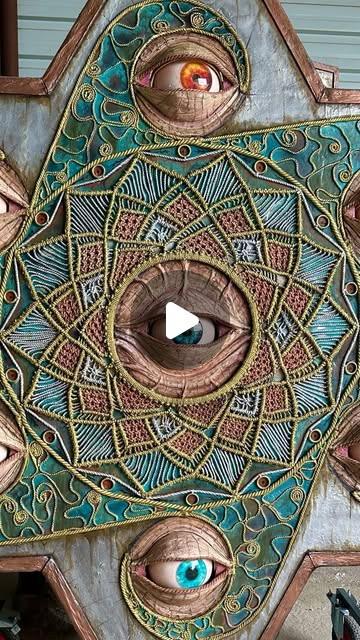

Mocap as Reward — teaching cheap robots to move like you
Try It — Action Sketch
Reproduce the Microduck standing run in its sim with 4,096 envs; confirm the reward hack., Record a 10-second webcam clip of a 'bob and look around' motion with FreeMoCap (or generate one with HY-Motion), retarget to Microduck's joints, and add a pose-tracking imitation term to the reward., Compare policies: reward-only vs reward + imitation, scored by a blind viewer on 'looks intentional' and by joint-tracking error; deploy the winner to hardware if you have it., Falsifier: if retargeting human motion to a duck-scale robot body produces infeasible joint targets that the policy can't track better than the plain reward, the motion prior is the wrong shape for small robots.
Connected Posts (7)






